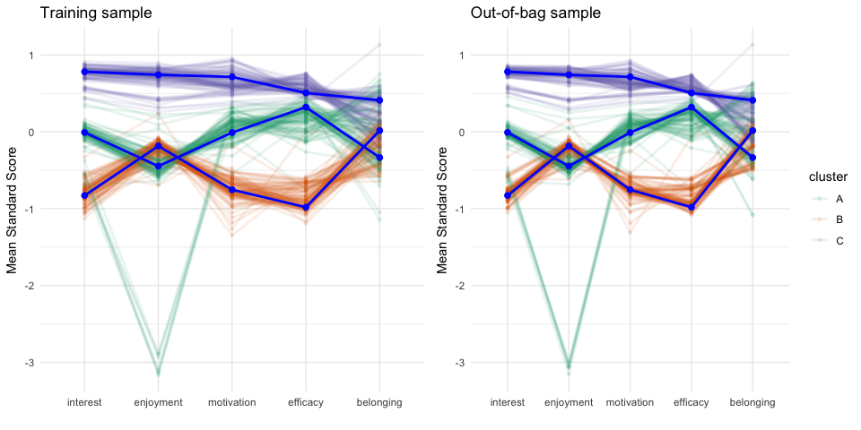
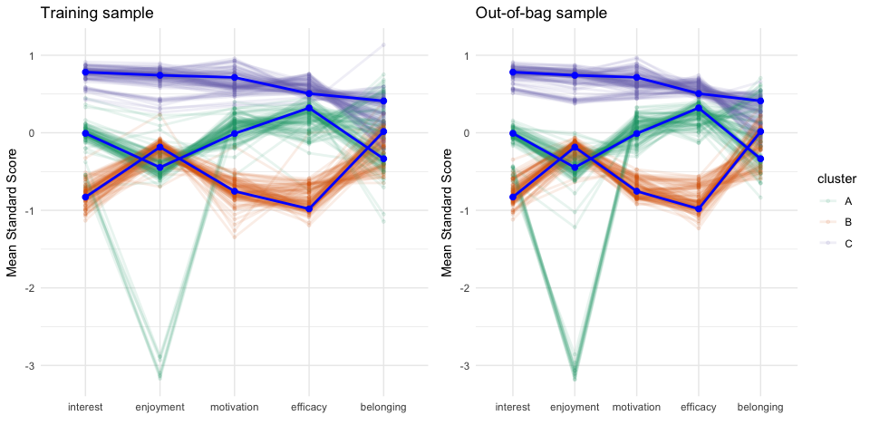

Slides from Joint Statistical Meeting (JSM) 2025
The clav package provides utilities for conducting cluster (profile) analysis with an emphasis on the validating the stability of the profiles both within a given data set as well as across data sets. Unlike supervised models where the known class is measured, validation of unsupervised models where there is no known class can be challenging. The approach implemented here attempts to compare the cluster results across many random samples.
Installation
You can install the development version of clav like so:
remotes::install_github('jbryer/clav')Development
The following commands are useful for working with the package source locally.
# Prep the PISA data set. This will take a while to run the first time.
source('data-raw/data-prep-pisa-2015.R')
# Generate the package documentation
usethis::use_tidy_description()
devtools::document()
# Install the package
devtools::install()
# Run CRAN check
devtools::check(cran = TRUE)
# Build the pkgdown site
pkgdown::build_site()Example
library(clav)
data(pisa2015, package = 'clav')
cluster_vars <- c('interest', 'enjoyment', 'motivation', 'efficacy', "belonging")
outcome_vars <- c('science_score', 'principals')
pisa_usa <- pisa2015 |> dplyr::filter(country == 'UNITED STATES')Finding the optimal number of clusters.
optimal <- optimal_clusters(pisa_usa[,cluster_vars], max_k = 5)
optimal
#> k wss silhoutte gap calinski_harabasz davies_bouldin rand_index
#> 1 1 9232 NA 0.83 NaN NaN NA
#> 2 2 6746 0.24 0.87 1708 1.6 0.50
#> 3 3 5965 0.20 0.86 1329 1.8 0.64
#> 4 4 5198 0.20 0.86 1198 1.7 0.75
#> 5 5 4682 0.20 0.86 1124 1.5 0.75
plot(optimal, ncol = 2)
Validating cluster profiles using random samples of 50%. Out-of-bag uses the remaining 50% to predict cluster membership.
pisa_cv_random <- pisa_usa |>
dplyr::select(dplyr::all_of(cluster_vars)) |>
clav::cluster_validation(
n_clusters = 3,
sample_size = 0.5 * nrow(pisa_usa),
replace = FALSE,
n_samples = 100,
seed = 42
)
plot(pisa_cv_random)
Re-estimate the clusters using the OOB sample instead of predicting using the in sample model.
pisa_cv_random2 <- pisa_usa |>
dplyr::select(dplyr::all_of(cluster_vars)) |>
clav::cluster_validation(
n_clusters = 3,
oob_predict_fun = function(fit, newdata) {
newfit <- stats::kmeans(newdata, 3)
newfit$cluster
},
sample_size = 0.5 * nrow(pisa_usa),
replace = FALSE,
n_samples = 100,
seed = 42
)
plot(pisa_cv_random2)
Bootstrap approach to validation.
pisa_cv_bootstrap <- pisa_usa |>
dplyr::select(dplyr::all_of(cluster_vars)) |>
clav::cluster_validation(
n_clusters = 3,
sample_size = nrow(pisa_usa),
replace = TRUE,
n_samples = 100,
seed = 42
)
plot(pisa_cv_bootstrap)
Using latent profile analysis for estimating clusters.
library(tidyLPA)
lpa <- pisa_usa |>
dplyr::select(dplyr::all_of(cluster_vars)) |>
tidyLPA::estimate_profiles(3)
# lpa_predict <- predict(lpa, pisaUSA15[sample(nrow(pisaUSA15), 100),])
# lpa_estimates <- get_estimates(lpa)
lpa_data <- get_data(lpa)
plot_profiles(lpa)
clav::profile_plot(pisa_usa[,cluster_vars],
clusters = lpa_data$Class,
df_dep = pisa_usa[,c('science_score')])
lpa_cv_random <- cluster_validation(
pisaUSA15,
n_clusters = 3,
cluster_fun = estimate_profiles,
oob_predict_fun = function(fit, newdata) {
estimate_profiles(newdata, n_clusters)
},
sample_size = 0.5 * nrow(pisaUSA15),
replace = FALSE,
n_samples = 50,
seed = 42
)
plot(lpa_cv_random)Profile Plot
fit <- pisa_usa |>
dplyr::select(dplyr::all_of(cluster_vars)) |>
stats::kmeans(centers = 3)
clav::profile_plot(pisa_usa[,cluster_vars],
clusters = fit$cluster,
df_dep = pisa_usa[,outcome_vars],
center_band = 0.33,
cluster_order = cluster_vars)